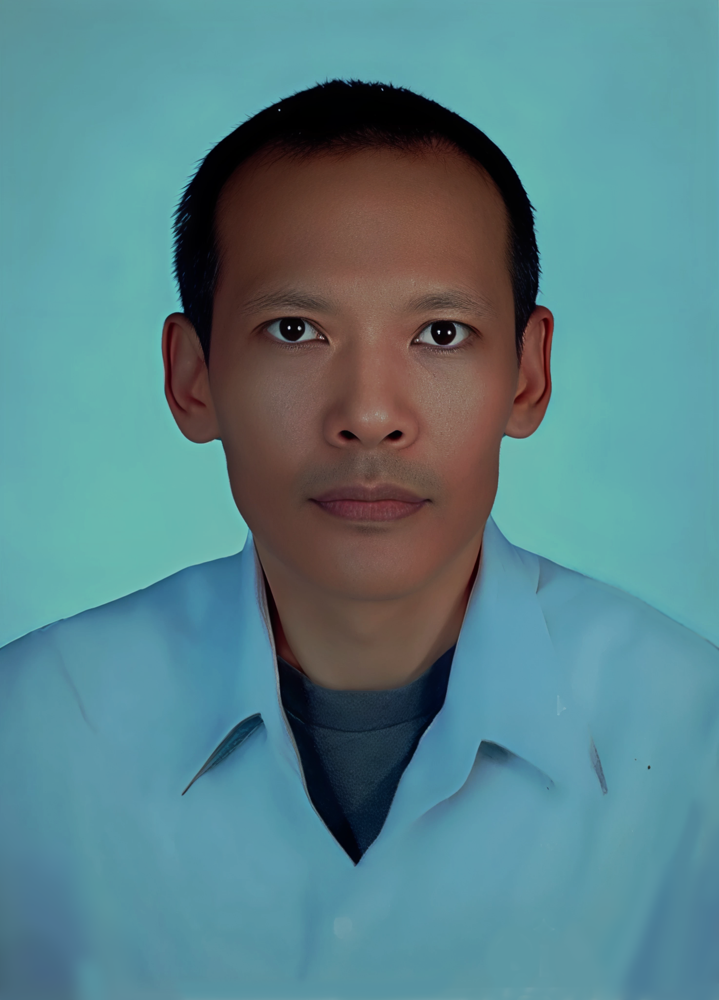

.png)
.png)
.png)
.png)
ที่อยู่ปัจจุบัน
77/49 ม.4 ธีรวรรณอพาร์ทเมนท์
ถ.ติวานนท์ 7, ต.ตลาดขวัญ, อ.เมือง, จ.นนทบุรี 11000
ผลงาน
ไชโย แสงใส
การศึกษา
มัธยมศึกษาตอนปลาย (ม.6)
ศูนย์การศึกษานอกโรงเรียน จ.อุบลราชธานี (2541)
ประสบการณ์ทำงาน
- Craft Estate – Chef de partie
• ระยะเวลา: 5 ต.ค. 2566 – 31 ต.ค. 2567
• ควบคุมคุณภาพอาหาร, จัดเตรียมวัตถุดิบ, สนับสนุนทีมครัว - Bulwark – Chef de partie
• ระยะเวลา: 2 พ.ย. 2564 – 30 ก.ย. 2566
• ตรวจสอบความเรียบร้อย, จัดการวัตถุดิบ, ระบบสต๊อก - The Salares Coffee Bar – Chef de partie
• ระยะเวลา: 1 มี.ค. 2563 – 30 ก.ย. 2564
• อาหารยุโรป, มาตรฐานร้าน - บิสโทร เดอ ฟลอร่า – Chef de partie
• ระยะเวลา: 1 ก.ค. 2560 – 31 ธ.ค. 2562
• อาหารอิตาเลียน, ทำซอส, จัดจาน, ประสานงาน - ฟาร์มรักดี – Head Chef
• ระยะเวลา: 6 ก.พ. 2558 – 31 พ.ค. 2560
• วางแผนเมนู, ควบคุมต้นทุน, ทีมครัวทั้งหมด
ทักษะ
- บริหารทีมครัว
- ทำงานภายใต้ความกดดัน
- แก้ปัญหาเฉพาะหน้า
- เครื่องครัวเฉพาะทาง เช่น ซูวีด์ / แว็คคั่ม
ทักษะเพิ่มเติม
- Microsoft Excel / คำนวณต้นทุน
- จัดทำ Recipe มาตรฐาน
- ภาษา
- ไทย
- อังกฤษ
งานอดิเรก
- ทดลองสูตรอาหารใหม่
- อ่านหนังสือเกี่ยวกับวัตถุดิบ